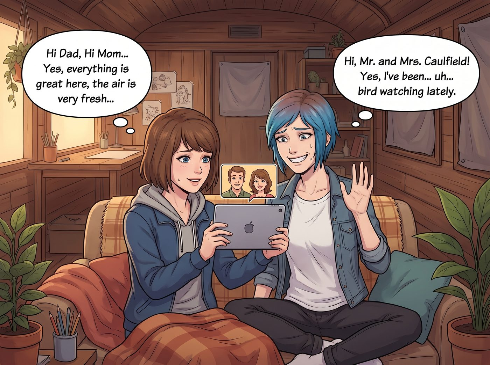

視訊掩護戰

這是一個寧靜的星期天晚上，二號車廂裡迎來了每個月最讓人神經緊繃的時刻——Max 父母（Ryan 和 Vanessa）的 FaceTime 視訊通話。
為了解釋這五個人為什麼會住在奧林匹亞半島的一個火車廂裡，Max 早在半年前就編造了一套天衣無縫的說辭：「這是一個由州政府資助的偏遠地區藝術與自然生態復育夏令營」。
視訊接通時，Max 緊張地舉著平板電腦，小心翼翼地調整鏡頭角度，以確保畫面裡絕對不會出現任何跟工坊真實業務有關的蛛絲馬跡。
「嗨，爸，嗨，媽……對，我們這裡一切都好，空氣很清新……」Max 尷尬地笑著。
Chloe 難得穿了一件沒有骷髏頭圖案的乾淨 T 恤，坐在 Max 旁邊，擠出一個僵硬的、好萊塢式的乖巧微笑：「嗨，Mr. and Mrs. Caulfield！是的，我最近都在……呃……觀察鳥類。」
一、社死邊緣的插曲
就在這對「亡命鴛鴦」努力維持著純潔大學生人設時，一個穿著粉色小熊睡衣、推著圓框眼鏡的身影，抱著一疊厚厚的文件走進了鏡頭。
「Max 學姐，關於我們做空西雅圖那家化工企業的吹哨人檢舉信，我需要您的數位簽名，這樣我們就能合法瓜分他們兩千萬美金的罰款……」
「哈哈哈哈！Lily！妳在背什麼舞台劇的台詞呢！」
Chloe 的反應速度達到了人類電競史上的巔峰。她猛地從沙發上彈起來，一把摟住 Lily 的肩膀，用極大的音量蓋過了「做空」「兩千萬美金罰款」等致命詞彙，同時瘋狂地給 Max 使眼色。
螢幕那頭的 Ryan 和 Vanessa 愣了一下，隨後兩人的眼神瞬間融化了。
「噢！Max，這個可愛的小女孩是誰？」Vanessa 的語氣充滿了母愛，看著螢幕裡那個戴著圓框眼鏡、穿著小熊睡衣、一臉乖巧的十九歲女孩，「她看起來就像個小號的 Kate！也是你們藝術營的志工嗎？」
坐在鏡頭死角喝著紅酒的 Victoria 差點把酒噴出來。
「呃……對！她叫 Lily！」Max 滿頭大汗地瘋狂點頭，「她是我們的……實習生！負責幫我們處理一些……文書工作！」
Lily 雖然被 Chloe 緊緊摟著脖子，但她那堪比頂級政治家的社交雷達瞬間啟動。她立刻意識到了當前的「合規語境」，於是推了推眼鏡，對著鏡頭露出了一個足以申請諾貝爾和平獎的純潔微笑。
「叔叔阿姨好，我是 Lily。我主要負責協助 Max 學姐進行一些環境保護倡導和資源優化配置的社會實踐項目。Max 學姐平時非常照顧我。」Lily 的聲音軟糯甜美，禮貌得無懈可擊。
「天哪，真是有禮貌的好孩子！」Ryan 在鏡頭那頭滿意地點點頭，「對了，Lily，妳手裡拿的那些厚厚的文件是什麼？大學的作業嗎？」
Max 的心臟瞬間提到了嗓子眼。
「這是我幫 Max 學姐整理的……」Lily 溫柔地看了一眼冷汗直流的 Max，「《北美瀕危鳥類棲息地觀察日誌》與《營地環保資金籌募計畫書》。」
「太棒了！現在的年輕人真有社會責任感！」Vanessa 讚嘆道。
二、無心的委託
在接下來的二十分鐘裡，Max 和 Chloe 經歷了人生中最漫長、最痛苦的「雙簧表演」。
當 Vanessa 抱怨他們在西雅圖郊區的社區管委會最近總是刁難他們，說他們家院子的籬笆超出了規定兩英吋，準備開罰單時，Lily 溫柔地開口了。
「阿姨，這真是太過分了。您能把管委會主席的名字和社區地址告訴我嗎？我剛好在選修一門社區法規的課程，我可以幫您寫一封禮貌的溝通信。」Lily 眨著無辜的大眼睛。
「哎呀，那怎麼好意思麻煩妳呢，Lily，妳真是個熱心的小天使，跟 Kate 一樣善良。」Vanessa 開心地把資訊告訴了 Lily。
Max 和 Chloe 在旁邊嚇得靈魂出竅。別人不知道，她們還不知道嗎？Lily 嘴裡的「禮貌溝通信」，向來意味著對方接下來的日子不會太好過。
「媽！不用了！這點小事不用麻煩 Lily！」Max 絕望地試圖阻止。
「Maxine！讓孩子鍛鍊一下有什麼不好！」Ryan 嚴肅地批評了女兒，然後笑著對 Lily 說，「那就辛苦妳了，Lily。有空來西雅圖家裡玩，阿姨給妳烤蘋果派！」
「謝謝叔叔阿姨，我一定會把這件事妥善解決的。」Lily 乖巧地揮了揮手。
三、掛斷後的餘波
當視訊通話終於掛斷時，Max 和 Chloe 像兩灘爛泥一樣癱倒在地毯上，彷彿剛打完一場世界大戰。
「所以，」Victoria 從陰影裡走出來，晃著紅酒杯，看著正在筆記本電腦上飛速敲擊鍵盤的 Lily，「妳打算怎麼妥善解決籬笆問題？」
Lily 頭也不抬地繼續敲著鍵盤：「已經查到那位主席自家的違建工程了，明天市政執法隊就會上門。他大概沒空再管籬笆的事。」
坐在廚房裡的 Kate 聽到這裡，雙手合十，發出了由衷的讚美：「Lily，妳真是太善良了，這就是愛與和平的傳遞呢。」
Max 痛苦地捂住臉，發出了一聲絕望的哀嚎。她知道，從明天起，她父母在西雅圖的社區裡將再也沒有任何管委會敢惹他們，而這一切，僅僅是因為他們在視訊裡，誇獎了一個看起來像「小號 Kate」的十九歲行政黑魔法師。